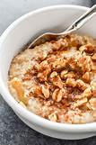

Cinnamon Oatmeal

Description
Cinnamon oatmeal are one of the best types of oatmeal you can potentially eat. There is no argument.
Cinnamon oatmeal takes the cake, its is super sweet and no sugar added. And no will this is no diet
soda propoganda so yes you can add without adding 100 grams of sugar instead of 0 calorie sweetner.
This is the best way to start your day healthily. Guess what this is all done with a wonderful microwave.
Ingredients
- Old fashion oats ONLY
- any kind of milk
- Cinnamon
- vanilla extract
- 0 calorie sweetner
- banana
- peanut butter
Steps
- Add a cup of oatmeal to your bowl
- Next add your cinnamon, 0 calorie sweetner and vanilla extract
- Add 1 cup of milk and then mix
- put the oats in the microwave for 2 minutes and take it out to soak for 4 minutes
- after 4 minutes put it back in the microwave for an additional minute
- Finally add your banana and peanut butter on top and enjoy!